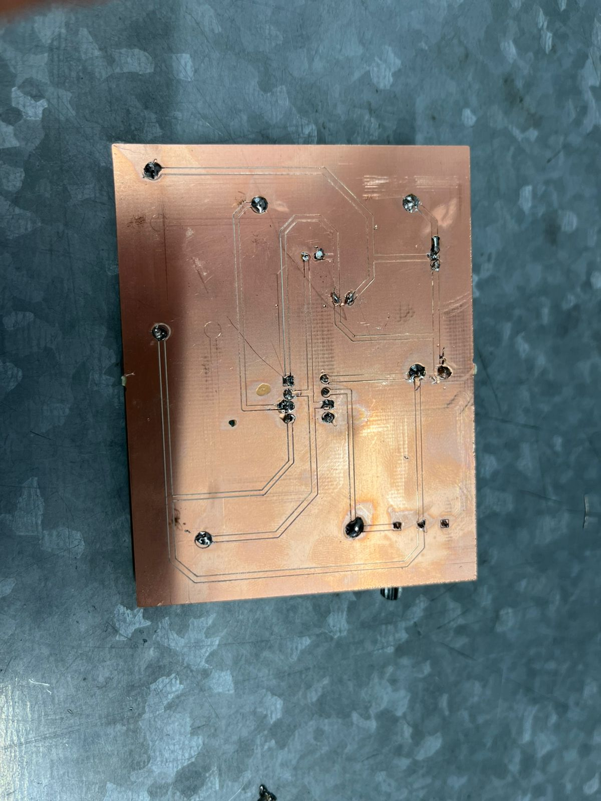
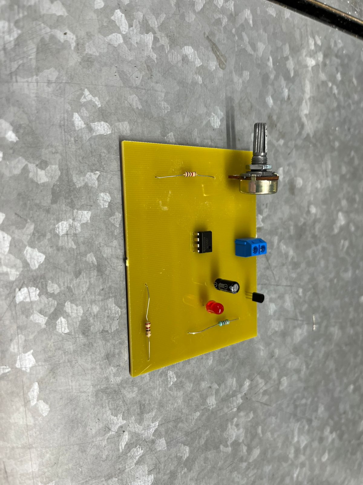

Fabricación y Ensamble de PCB
Diseño y fabricación de una Placa de Circuito Impreso (PCB) personalizada. El diseño se realizó utilizando EasyEDA, grabado en una placa de cobre con una fresadora LPKF y finalizado con la soldadura de todos los componentes.
Placa Fresada
PCB Ensamblado
Diseño en Tinkercad
Se diseño en Tinkercad para mayor claridad primero. Puedes interactuar con el modelo aquí: